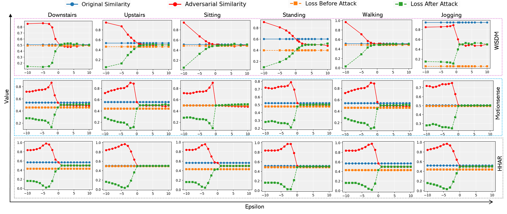

Traditional HAR vs. Contrastive HAR
Traditional HAR directly classifies sensor data into activity labels, while contrastive HAR aligns sensor embeddings and text embeddings in a shared embedding space.
This website demonstrates a cross-modal embedding poisoning attack on contrastive multimodal human activity recognition. It shows how a small perturbation in the text embedding space can reduce correct sensor-text similarity, increase contrastive loss, and cause semantic misalignment.
This demo website presents the main idea and experimental results of the paper “Breaking Sensor-Text Alignment: Cross-Modal Attack on Contrastive Multimodal Human Activity Recognition.” The paper studies a security weakness in contrastive multimodal HAR systems, where wearable sensor signals and natural-language activity descriptions are aligned in a shared embedding space.
The demo explains how a bounded text-side embedding perturbation can reduce correct sensor-text cosine similarity, increase contrastive loss, and create semantic drift. These effects can cause the model to match a sensor pattern with an incorrect activity description.
Visit Live WebsiteThese two figures are moved out of the Results section. The first figure explains the difference between traditional HAR and contrastive HAR. The second figure explains how sensor-text misalignment happens under the proposed attack.
Traditional HAR directly classifies sensor data into activity labels, while contrastive HAR aligns sensor embeddings and text embeddings in a shared embedding space.

The attacker injects a bounded perturbation into the text embedding during inference. This shifts the text representation and causes similarity with the correct sensor embedding to go down.
The website focuses on three visible effects of the attack.
The correct sensor-text cosine similarity decreases after perturbation.
The contrastive loss increases because the aligned pair is pushed apart.
The poisoned text embedding moves toward an incorrect semantic interpretation.
Select a dataset and move the epsilon slider. The demo updates similarity, loss, and the poisoned text embedding position.
The architecture and attack overview figures are not included here. This Results section only contains experimental graphs. Use the controls to switch datasets and graph types.

This graph shows original similarity, adversarial similarity, loss before attack, and loss after attack across datasets and activities.
Upload these files to your GitHub repository root. Do not place them inside another folder.
breaking-sensor-text/
├── index.html
├── style.css
├── script.js
├── README.md
└── images/
├── traditional_vs_contrastive.png
├── sensor_text_misalignment.png
├── similarity_loss_all.png
├── pgd_wisdm.png
├── pgd_motionsense.png
├── pgd_hhar.png
├── pgd_wesad.png
├── norm_wisdm.png
├── norm_motionsense.png
├── norm_hhar.png
└── norm_wesad.png